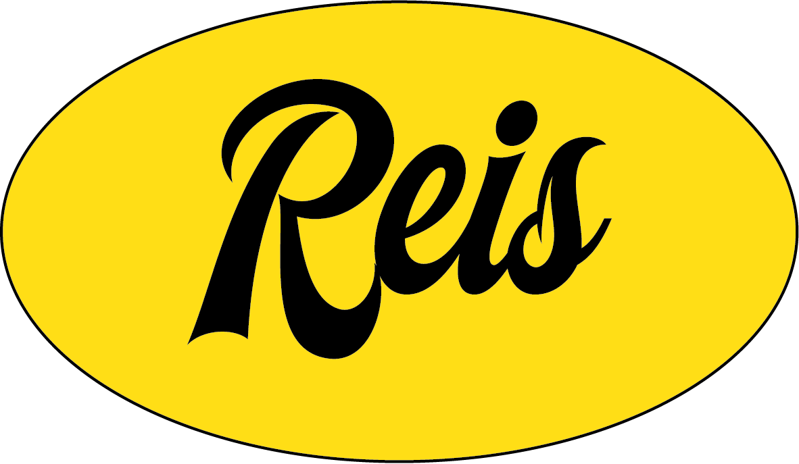

Líban — A Água Que Cura
Logline: Para vencer o preconceito e curar as cicatrizes de um naufrágio devastador, um jovem refugiado somali precisa enfrentar seu maior medo e transformar a água traumática de seu passado em sua maior força na piscina.

Felipe ReisResumo Profissional: Profissional com 5 anos de experiência no mercado audiovisual, com atuação nas áreas de edição de vídeo, produção audiovisual e som direto.
Formação Acadêmica: Comunicação Social – Pontifícia Universidade Católica do Rio de Janeiro (PUC-Rio), formado em Junho/2024.
Idiomas:
• Inglês: Avançado
• Espanhol: Avançado
Logline: Para vencer o preconceito e curar as cicatrizes de um naufrágio devastador, um jovem refugiado somali precisa enfrentar seu maior medo e transformar a água traumática de seu passado em sua maior força na piscina.
Logline: Para superar o colapso de sua carreira, um ex-engenheiro reconecta-se com seu próprio futuro através das cartas esquecidas de um homem que morreu sozinho, transformando o luto alheio em sua própria redenção literária.
Logline: Em uma era onde a vida é mais assistida do que vivida através das telas, um documentário investiga a crise de autoestima e o isolamento dos homens contemporâneos, propondo que a verdadeira raiz do problema não é psicológica, mas sim a escassez de experiências reais e o desaparecimento dos espaços de pertencimento físico.
Ficha Técnica
Créditos
Perfil no TikTok sobre moda, cinema e música: Lado B da Cena
Perfil no Substack sobre moda, cinema e música: Lado B da Cena
Fim · Contato
Telefone: (21) 9 7455-4444
Instagram: @insidereismind
E-mail: lipereis99@hotmail.com
LinkedIn: Felipe Gomes